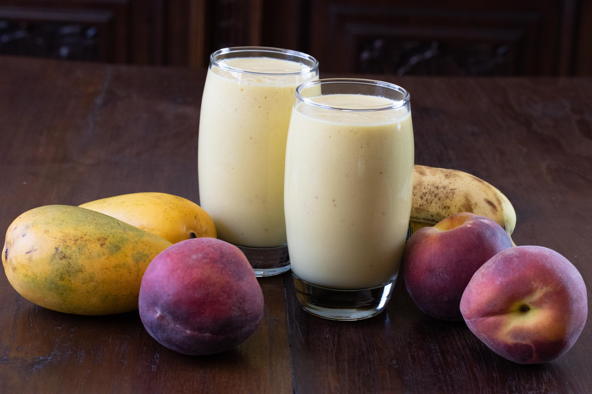

A refreshing italian fruit smoothie, perfect for breakfast or as a snack.
This image is licensed under a Creative Commons Attribution License. Image from foodista.com
Ingredients:
- 2 bananas, peeled
- 1 fresh mango, peeled and pulp removed from the internal core
- 3 ripe peaches, peeled, cut, and internal seed removed
- 1 tablespoon sugar
- 1 cum whole milk, or enough to cover the fruits
Instructions:
- Put all the peeled and cut fruits in the blender. Cover with milk to just cover all the fruits. Add the sugar.
- Blend until perfectly smooth and no chunks are left. Serve immediately.